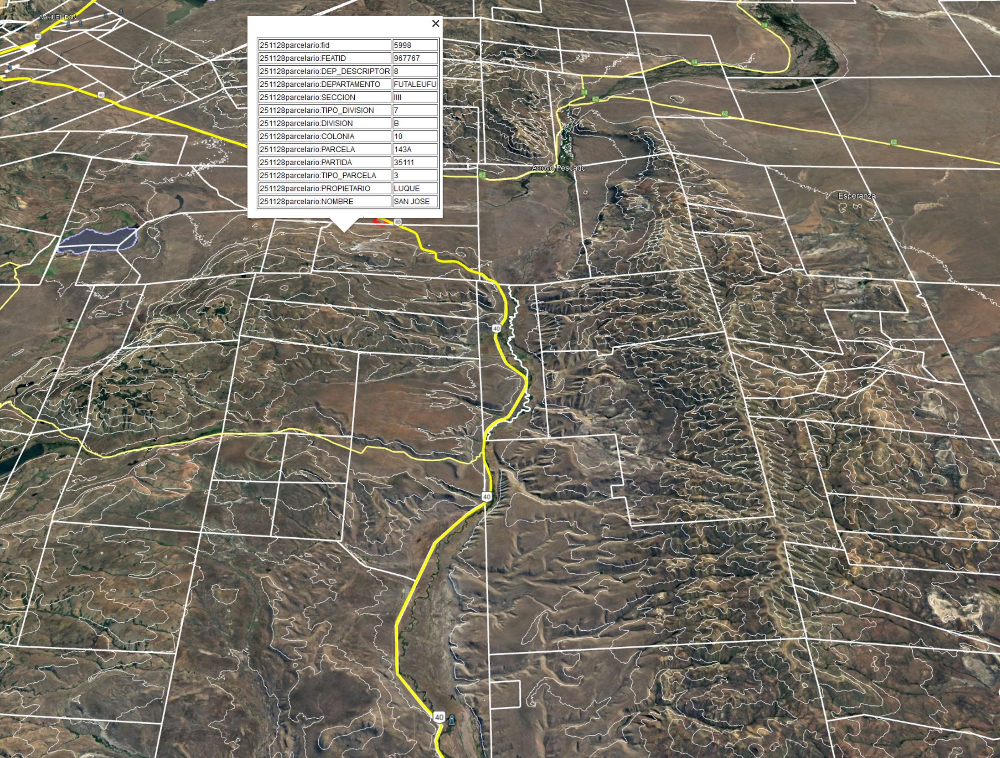
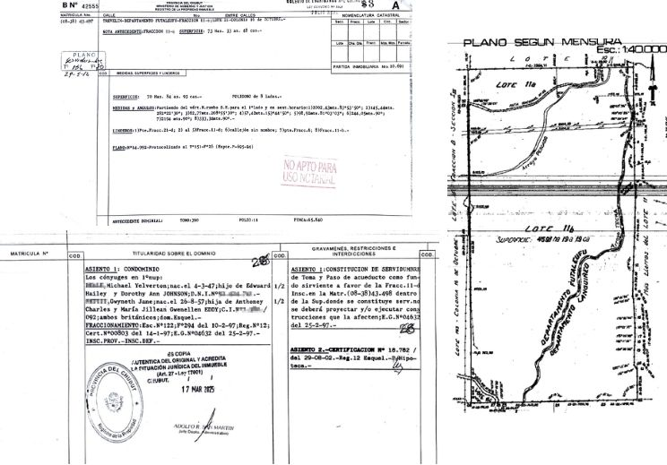

This cartographic, cadastral, land title and satellite mapping proposal for your property will be a fundamental guide to deepen your understanding of the natural and man-made resources on your estate and how your agricultural and livestock system interacts with them and with the upcoming planned tourism activity.
This new knowledge and perspective of your territory will help in the management of your property.
Specifically, the plan covers the understanding of your land resources, soil health diagnosis, protection and improvement of native biodiversity, understanding of freshwater health and its determining factors, and climate change response.
This report aims to assist in decision-making to optimize results regarding your resources, your business and your environment.
Request and purchase of updated Domain Reports.
Study and analysis of survey records to understand the legal status of the property and also to determine if there is a need to update the ownership or cadastral situation.
Delivery of digitized plans of each survey and cadastral information found.
This study allows diagnosing the legal situation of the property, which can be compared with the actual agricultural occupation to be delimited by satellite.

Purchase of a satellite image of the entire property. This image will provide detailed information about the current situation, which can be viewed on a variety of electronic devices with the option of printing it by sectors of greatest interest.
Drone surveying, obtaining orthorectified and georeferenced aerial photos, allows monitoring the progress of infrastructure works, analyzing soils and surface water, forest mass, vegetation, and land use changes.
It is a fundamental tool for communication within the management team, enabling them to stay informed about changes and progress on site, as this information would be updated periodically.
Survey stages and areas to be agreed upon with the client.
These satellite images and aerial photos allow for a highly detailed digitization of every relevant physical feature for property management, where the occupied area can be compared with the legal area according to the title.
Having geographic features, infrastructure, water courses and bodies, grazing areas, fences, wetlands, and forest areas vectorized enables easy visualization and printing of the current situation, upon which one can plan the installation of new infrastructure, productive areas, and location of future projects.
Depending on the image chosen for vectorization, the definition of the result will vary. If high-resolution satellite images were not acquired or drone flights were not performed, this digitization is done based on proprietary images.
Within this stage, area and perimeter calculations are made, and it is an excellent tool for comparing this information about the actual and current occupation with the legal situation determined at the beginning of this study.
Delivery of this work is done in the digital format most convenient for the client.
Depending on the total property area, a poster of appropriate dimensions will be suggested for a clear visualization of existing physical features. It would consist of the superposition of the digitized data over a satellite image.
Delivery of this work is done in digital format, PDF, ready to be printed on photographic paper.
Satellite image analysis is crucial because it provides vital data about the land surface and its changes over time. It serves as a basis for decision-making in agricultural and tourism planning, resource management and its corresponding monitoring, environmental assessment, disaster management and weather forecasting.
The calculation of property slopes is suggested to be done by sectors. The presentation is delivered with the background image, in graduated colors for easy interpretation, with the superposition of all previously digitized infrastructure and physical features. This study is presented in digital format.
With satellite analysis, the water content in vegetation and soils can be determined, and droughts can be monitored. By conducting multi-temporal studies with remote sensors, it is analyzed how a geographic area changes over time using remote sensor images taken at different moments. This allows identifying change trends and comparisons can be made at key times for agricultural management.
A very popular index in agricultural management is the Normalized Difference Vegetation Index (NDVI), a simple but effective index for quantifying green vegetation. It offers a measure of vegetation health status, based on how plants reflect light at certain wavelengths.
This presentation shows a part of everything that can be done digitally, and is divided into independent stages; hiring can be done separately and at different times.
It provides an overview of the current territorial situation from the comfort of your desk.
Furthermore, by comparing cadastral records with historical occupation, the opportunity or need to carry out surveys can be determined so that what is occupied matches what is legal, thus obtaining a perfect title.
We remain at your disposal for any questions, inquiries or suggestions.
We offer precise and reliable solutions in:
Depending on the situation diagnosis and the intended project, we proceed with field surveying, followed by office work and the corresponding procedures and submissions.
We look forward to hearing about any particular interest you may have so we can provide detailed quotations.